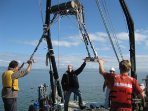
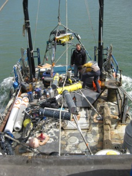
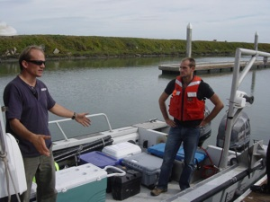

|  |
Field observations are essential to the understanding of environmental fluid systems. Measurements of flow velocities and scalars such as salinity, temperature, or sediments can be used to calibrate and validate numerical models as well as to identify the inherent variability, interactions, and uncertainty in natural systems that cannot be captured in laboratory settings.
Field Instruments
UC-Berkeley environmental fluid mechanics group has a wide array of instrumentation available for use in the field. These include 4 acoustic Doppler current profilers (ADCPs), 4 acoustic Doppler velocimeters (ADVs), one temperature microstructure profiler (SCAMP), one controllable tow-body (Acrobat), 2 profiling packages (SeaBird) that include conductivity, temperature, pressure, optical backscatter, dissolved oxygen, 8 conductivity-temperature-depth and optical backscatter sensors (CTD-OBS, Seabird, RBR and D&A) and an array of 30 thermistors (RBR).
With the exception of the microstructure profiler and the Seabird profilers, most instruments are used in moorings for long-term measurement of mean velocities, turbulence statistics and scalar variations. In most field studies, these moored timeseries are supplemented by detailed profile measurements to evaluate vertical and horizontal variability in the vicinity of the moorings.
Recent field efforts have examined ocean-estuary exchange at the Golden Gate, the dynamics of the shoal-channel interface in San Francisco Bay, the connection between the Bay and perimeter marshes, turbulence and mixing of biota in Monterey Bay, and the dynamics of mixing in a shallow coastal lagoon. Our instrumentation collection is constantly growing, so if you are interested in particular sensors, either as an incoming graduate student or in collaborative research, please contact Professor Stacey.
 